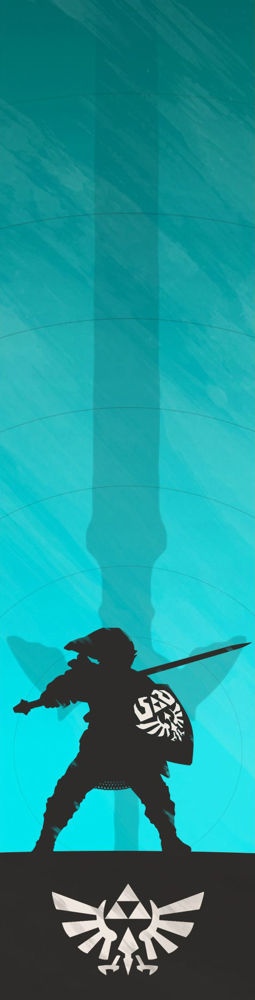

Accueil
Description du Projet
Le projet que j'ai entrepris est de finir à 100% tous les jeux de la célèbre licence
The Legend of Zelda.
Dans cette Quête, les DLC sont aussi à finir afin de compléter le jeu.
Ce blog regroupe donc plusieurs articles sur l'avancée de ma Quête,
les difficultés rencontrées et même quelques anecdotes sur la licence Nintendo.